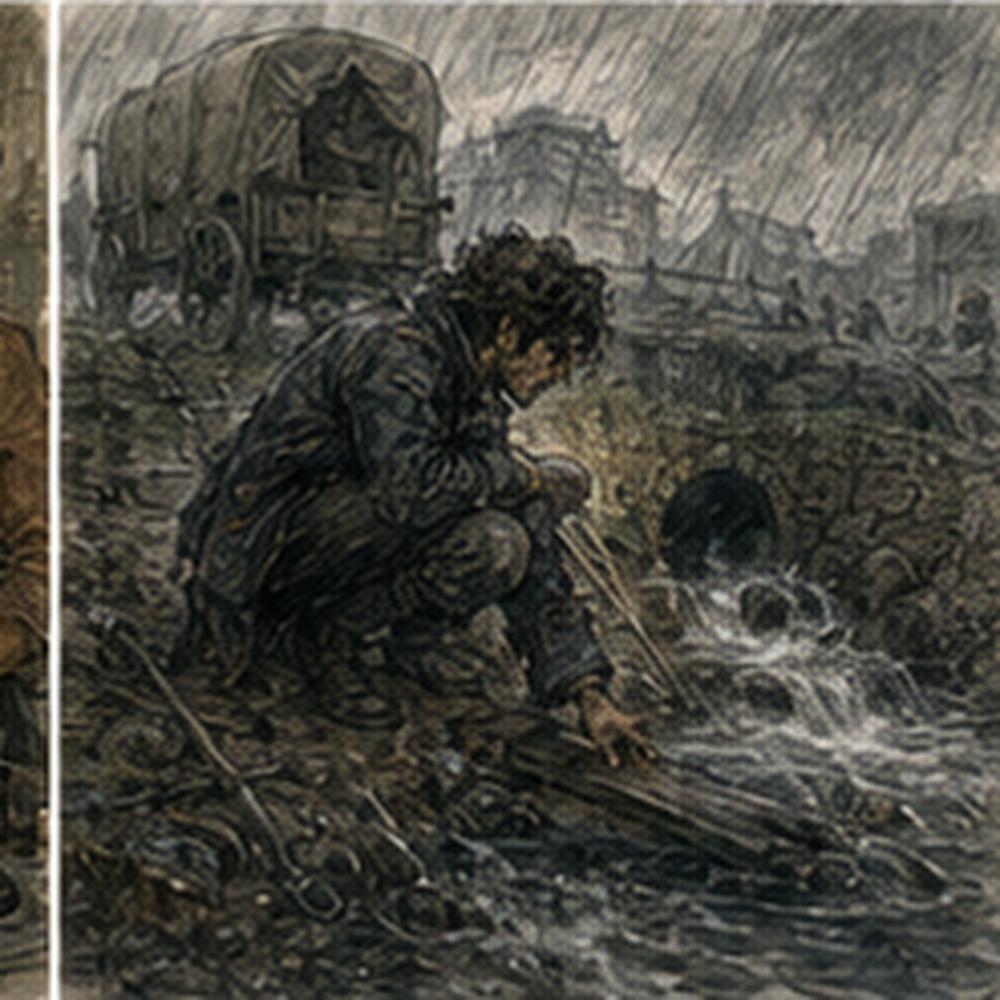
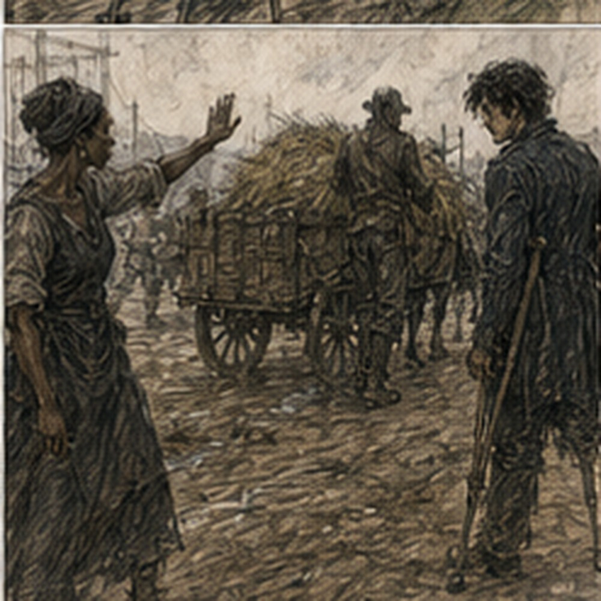

Pessa's wagon had one wheel that squeaked every seventh turn. Not every turn. Every seventh. I counted for three minutes before Dorn noticed.
“Stop,” Dorn said.
“What?” I asked.
“Counting.”
“I wasn't.”
“Squeak,” Dorn said.
Pessa climbed onto the driver's bench.
“Wheel is fine,” she said.
“I know.”
Dorn put the iron probe under the seat.
“Then stop.”
The wheel squeaked. Seven. I stopped counting. Mostly. First bell had barely finished when we rolled through the south-west gate. Carrow thinned quickly in that direction. Stone buildings gave way to fenced yards, then sheds, then fields broken by low walls and drainage ditches. The road was packed gravel over older stone in some places and packed earth pretending to be gravel in others.
Recent rain had left dark strips along the shoulders. The center was already drying. Pessa drove. Dorn sat beside her. I sat in back with the stakes, chalk, inspection board, food, and absolutely no authority over the horse. This was probably safest for everyone. Pessa called over her shoulder.
“First complaint is washout.”
“Where?”
“Half mile.”
“How bad?”
“Farmer says wagon-breaking.”
Dorn said, “Farmer owns a wagon.”
“Relevant,” I said.

Pessa smiled. Barely. The first complaint was not wagon-breaking. It was annoying. A farm approach crossed a shallow roadside ditch through a stone-lined culvert. Water had eaten a channel along the outer shoulder where the culvert outlet met softer ground. Two feet long. Maybe three inches deep.
One wagon wheel could catch it if the driver aimed badly. The farmer was waiting. Of course. Older man. Red face. Hat too small.
“You see it.”
Pessa climbed down.
“I see something.”
“Lost half the road.”
We all looked at the road. The road remained mostly present. Dorn took the probe. Pessa walked the shoulder. I checked the packet.
Complaint:
SOUTH EDGE COLLAPSING
CARTS CANNOT PASS
Carts were passing. One passed while I read it. The farmer pointed.
“That one's empty.”
Good information. Pessa said, “When did it start?”
“After rain.”
“Which rain?”
“The rain.”
There had been several. Dorn pushed the probe into the shoulder. Firm. Again closer to the wash. Softer.
“Edge only.”
Pessa nodded. I crouched near the outlet. Water stain. Silt. Grass bent downstream. The culvert mouth itself was mostly clear. Mostly. A branch had caught two handfuls of straw against the lower edge. Not blocked. Restriction maybe ten percent.
I wrote:
REPORTED: CARTS CANNOT PASS
OBSERVED: PASSABLE
OUTLET SHOULDER WASH ~2 FT
SOFT EDGE LOCAL
CULVERT MINOR DEBRIS
LOADED CART CLEARANCE NOT OBSERVED
Pessa read.
“Good.”
I pointed at her. She ignored me. The farmer said, “When are you fixing it?” Pessa took blue chalk and marked the stone at the culvert.
“Not today,” Pessa said.
“You're here,” the farmer said.
“Yes.”
“You have tools,” he said.
Dorn held up the probe.
“This is a stick,” Dorn said.
“I can see that.”
“Then we're making progress.”
Pessa said, “We'll mark priority. Crew comes later.” The farmer looked at me.
“You're Guild.”
“Yes.”
“Can you fill it?”
“No.”
“You're standing there.”
“Yes.”
This was apparently evidence.
“We're inspecting.”
“I need it fixed.”
“I understand.”
That was dangerous phrasing. Did I? I understood what he wanted. Not necessarily what he needed. Pessa said, “Next.” We left. No repair. The farmer remained dissatisfied. The road remained functional. Good. Second site was not on the complaint list. Pessa stopped the wagon herself. I had been looking at a fence. Bad. Dorn had been looking at the road. Better.
“What?” I asked.
Pessa pointed at the ditch. Nothing dramatic. Water. A thin line of it still moving even though the surrounding ground was drying.
“Why?” she asked.
I looked uphill. Field. Low stone boundary. No visible stream. The road ditch carried water south.
“Seep?”
Dorn jumped down.
“Maybe.”
He probed the shoulder. Firm. Closer to ditch. Soft. Again. Softer. Pessa walked twenty yards uphill. I followed. The water appeared from beneath a patch of grass at the inside shoulder. Not much. Enough to keep the soil wet.
“Culvert?” I asked.
“No culvert here,” Pessa said.
Packet agreed. No marked drainage crossing. Dorn pushed the probe deeper. It dropped suddenly. He stopped. Not dramatic. Just stopped.
“Void?”
“Maybe.”
Pessa crouched.
“Old drain.”
“How old?”
“Road was rebuilt over older farm cuts.”
I looked at the map. Nothing.
“Not recorded.”
“No.”
There. Field systems. Maps remembered one version. Ground remembered more. I liked this. Pessa scraped grass aside with her boot. A line of flatter stones emerged under the soil. Old drainage channel. Collapsed or buried. Water had found it anyway. Dorn said, “Shoulder's thin over it.”
“How thin?”
He probed.
“Eight inches here. Maybe six there.”
“Traffic risk?”
Pessa looked at the wheel track. Not over it. Yet.
“Not today.”
She marked red. Red, apparently, was higher priority. I had still not been told colors. I looked at her. She saw.
“Blue monitor. Red repair soon. White note only.”
“Why didn't you tell me yesterday?”
“Because now you'll remember.”
Annoying. Correct.
I wrote:
UNREPORTED ACTIVE SEEP
LIKELY OLD DRAINAGE CUT
SHOULDER THIN LOCAL
CURRENT WHEEL TRACK CLEAR
RED
Pessa added:
CHECK AFTER NEXT HEAVY RAIN
Important. Not just condition. Change. We moved on. By midmorning, I understood why Pessa liked road work. Not roads. Difference. The complaints were stories. The map was a story. The road was what remained after water, wheels, stone, repairs, neglect, animals, weather, and people argued with the stories. At the third site, the complaint said standing water. There was none. The farmer's wife met us with her arms folded.
“It drains now.”
Pessa said, “What changed?”
“My sons dug it.”
Pessa closed her eyes.
“Where?”
The woman pointed. A fresh trench cut from the road ditch through the farm edge. Not deep. Effective. Probably. Dorn walked it. I looked at Pessa.
“No repair,” I said.
She looked at me.
“This is not our repair.”
“Still.”
The woman said, “It works.” Pessa said, “Until it sends road water into your lower field.”
“It already goes there.”
“Where after?”
The woman pointed farther. Another ditch. Maybe. Pessa walked. We followed. The improvised cut joined a farm drain, which joined a larger ditch, which disappeared under a hedge. Dorn said, “Where does that go?” The woman said, “Merek's.”
“Does Merek know?”
“No.”
Good. Infrastructure diplomacy. Pessa wrote something.
“What priority?” I asked.
“White.”
“Why not blue?”
“Road problem is solved.”
“Potential downstream problem.”
“Not Guild road yet.”
Yet. Important.
“Do we tell Merek?”
“Yes.”
“Us?”
“Farmer.”
The woman frowned. Pessa handed her a note.
“Tell him before next rain.”
She took it. No argument. Maybe because Pessa had the road face. I needed a road face. Probably not. We ate beside a low wall near noon. Bread. Cheese. Dried meat. Apple. Dorn had boiled eggs. Pessa had something wrapped in leaves. No one shared. Professional boundaries. The horse grazed. The wheel did not squeak while stopped. Excellent. I flexed my hand.
Fine. Gloves good. Boot repair invisible. Also good. Pessa looked at my board.
“You write too much.”
“I've been told.”
“Write less.”
“Which parts?”
“Things that change decisions.”
“That is subjective.”
“Yes.”
I hated experts. Dorn said, “Farmer red face doesn't change decision.”
“I didn't write red face.”
“You thought it.”
“Yes.”
Pessa took my board. First site.
She crossed out:
CULVERT MINOR DEBRIS
Then wrote:
CLEAR BY HAND NEXT CREW
I looked.
“That's repair instruction.”
“For next crew.”
“Right.”
Second site. She kept almost everything. Third.
She crossed out half my drainage description and wrote:
PRIVATE CUT DIVERTS ROAD WATER
OWNER TO NOTIFY DOWNSTREAM FARM
Cleaner. I did not like it. Therefore probably better.
“What am I missing?” I asked.
“Priority,” Pessa said.
“I mark color.”
“Why?” she asked.
“Severity.”
“No,” Pessa said.
I looked at her.
“Then what?”
“Consequence plus change.”
There. She pointed back toward the first farm.
“Washout is visible. Farmer angry. Low consequence today. Slow change unless rain.”
Then second.
“Seep is small. Nobody complained. Could change fast under rain because shoulder cover is thin.”
“So red.”
“Yes.”

“Third is downstream uncertainty but current road function improved.”
“Yes.”
“White.”
“Yes.”
I thought. Not severity. Consequence plus change. Not universal. Road inspection. This route. Probably. I wrote it in the margin. Pessa saw.
“Keep it in the margin.”
“Why?”
“Because the next road may punish a different shortcut.”
Dorn ate an egg.
“Roads are rude like that.”
I threw a piece of bread at him. He ate that too. After lunch came the narrow stone bridge. It was fine. This was disappointing. Not because I wanted danger. Because Jorren had mentioned it and my brain had spent unnecessary time assigning significance. Old stone. Single cart width. Low parapets. Shallow stream beneath. One patch of newer mortar on the west side.
Pessa stopped.
“Inspection.”
Dorn took the probe.
“Stone.”
“For approaches.”
“Right.”
We walked. The bridge deck had shallow wheel wear. No fresh cracks. Mortar patch sound. Stream clear. One branch caught upstream against a pier. Not enough to matter.
I wrote:
BRIDGE SERVICEABLE
WEST MORTAR PATCH HOLDING
UPSTREAM BRANCH MINOR
Then paused. Pessa watched.
“What?”
“Nothing.”
“Greg.”
“Jorren said bridge.”
“And?”
“I expected something.”
“Why?”
“Because it was mentioned.”
Dorn laughed. I hated him. Pessa said, “Roads don't care about narrative.”
“Neither do most things.”
“Good.”
I did not point. Growth. We moved on. The next farm spur was where I became useful. Not uniquely. Useful. A loaded hay wagon came toward us while Pessa was inspecting a shoulder cut. The road narrowed between a ditch and a stone wall. Our wagon was parked partly off the road. Plenty of room for an empty cart. Maybe not the hay wagon.
I saw the load width. Then the soft shoulder beside our rear wheel.
“Stop.”
The hay driver stopped. Immediately. Good driver. Pessa looked up. I pointed.
“Loaded width plus our wheel. If he takes ditch side, shoulder edge.”
Dorn looked.
“Move ours.”
Pessa nodded.
“Greg, hold him. Dorn.”
Dorn climbed onto our wagon. I walked to the hay cart.
“Two minutes.”
Driver shrugged.
“Fine.”
No argument. Dorn moved our wagon forward onto firmer ground. Pessa checked the shoulder. Then waved. I stepped aside. Hay wagon passed. Nothing happened. The driver said, “Thanks.” I said, “Pessa.” He looked confused. Good. We continued.
Later, at a culvert half blocked with reeds, I used magic. Not because reeds were dangerous. Because we needed to see the outlet while water still moved. Dorn could have reached in. Probably. The bank was slick.
Pessa said, “Can you move that leaf mat without stepping down?” I looked.
“Probably.”
Hessa's word. Small Barrier. Directional. Physical. Needed? Could use a stick. Dorn's probe. But probe would disturb the silt bed more. Magic gave cleaner observation.
“Yes.”
I anchored against the culvert stone. Not my hand. Not my body. Stone edge. Coin-sized plane. Angled. One breath. I pushed sideways. Not the reeds. Water. A small deflection in the flow lifted the loose leaf mat enough that it peeled away from the outlet and drifted six inches downstream. Drop. Clean. No pressure. Pessa looked at the opening. Dorn looked at the silt line.
I looked at my own head. Nothing. Good.
“Again?” Dorn asked.
“No need.”
Correct answer. Pessa crouched.
“Outlet lip cracked.”
There. Hidden by leaves. Not severe. But real. She marked blue.
“Magic useful?” I asked.
“Yes.”
I liked that. Too much. We kept going. An hour later I had forgotten the cast. That was probably healthier. The last major site before turning back was a farm approach reported as sinking. It was sinking. Not dramatically.
The approach crossed a broad drainage line through two side-by-side stone culverts. One flowed. One did not. The road surface above the dry one had settled maybe an inch. Dorn probed. Soft. Pessa walked downstream. I checked upstream. The dry culvert mouth was buried under mud and grass. Not blocked yesterday. Blocked for a while. Water had shifted entirely through the other opening.
I wrote. Pessa came back.
“Priority?”
I looked. Current passable. One culvert carrying full flow. Approach settling over the inactive one. Next heavy rain could increase load on the working culvert. If that blocked, water would cross road.
“Red.”
“Why?”
“Redundancy gone.”
Pessa looked at me. I hated when she did that.
“What?”
“Say it without pretending roads are machines.”
“They are machines.”
“No.”
“Systems.”
“No.”
“Fine. One drain is doing both drains' work. The other has soil over the mouth and the road above it is settling. More rain gives the remaining opening more water. If it clogs, water has nowhere designed to go.”
Pessa nodded.
“Red.”
Good. Dorn said, “Could clear the mouth in ten minutes.” I looked at Pessa. She looked at the mud.
“No repair.”
Dorn nodded. No argument. That was harder than it sounded. Ten minutes. Obvious fix. Tools present. Could improve it now. But clearing the mouth without knowing why the culvert had gone dry could send water under a settled section, wash more fill, or create a different problem. Maybe. Pessa knew. I thought. Difference. We marked it. Red. Report. Move. On the return road, clouds gathered west.
Not storm. Weather. Pessa looked once.
“Tomorrow wet?”
“Maybe,” Dorn said.
I looked at the sky. Old Greg knew weather badly. Young Greg knew it worse.
“Does that change tomorrow?”
Pessa said, “If it rains tonight, yes.”
“How?”
“We look at today's red seep again before going farther west.”
“Because change.”
“Yes.”
There. Field systems did not stay politely inspected. Interesting. Not ominous. Interesting. We reached Carrow before evening. The wheel squeaked. I did not count. This was growth. At the Guild, Pessa gave the clerk our tags and report. Not mine. Ours. She kept my board.
“Why?”
“I'm cleaning it.”
“I can clean it.”
“I know.”
“That sounds insulting.”
“It is.”
Dorn leaned against the desk.
“Tomorrow first bell.”
“I know.”
“Food.”
“I know.”
“Gloves.”
I held them up. He nodded. Pessa looked at me.
“Good work.”
I froze. She saw.
“Don't.”
Too late. I was pleased.
“Tomorrow,” she said.
“Tomorrow.”
I left. My body was tired in the satisfying way. Feet warm. Back slightly stiff from wagon sitting. Hand fine. No channel symptoms. One cast. Clean. I bought hot food. Stew. Bread. Something fried I did not identify.
At home, the room was exactly where I had left it. Of course. I unpacked. Dirty gloves on the table. Road board gone with Pessa. Food bag lighter. Apple gone. I crossed out ROAD DAY ONE on the calendar. Not dramatically. One line. Done.
Then I added beneath it:
RED SEEP RECHECK IF RAIN
I stopped. That was Pessa's decision. Not mine. I crossed it out. Tomorrow she would decide. Better. Outside, rain tapped once against the window. Then stopped. I looked at it. Nothing. Weather. I took off my boots. The repaired eyelet held. Excellent. Tomorrow we would do it again.